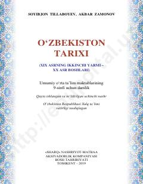

9O9-sinf uchun O'zbekiston tarixi fani bo'yicha rasmiy darslik.
Ushbu darslik umumiy o'rta ta'lim maktablarining 9-sinflari uchun mo'ljallangan bo'lib, XIX asrning ikkinchi yarmi va XX asr boshlaridagi O'zbekiston tarixini qamrab oladi. Unda Rossiya imperiyasining o'lkani istilo qilishi, mustamlakachilik siyosati va uning oqibatlari hamda xalqimizning ozodlik uchun kurashlari haqida batafsil ma'lumot beriladi.